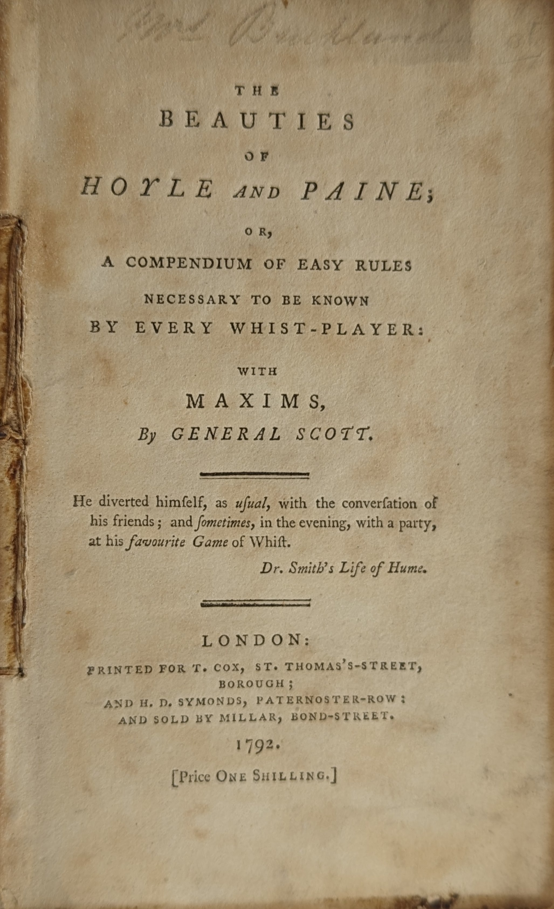

A Descriptive Bibliography of Edmond Hoyle
Copyright © 2014-26 by David Levy
(page updated 2023-11-26)User Guide
Scott.1
The Beauties of Hoyle and Paine, printed for T. Cox, first London edition, 1792.
 |
Title: | THE | BEAUTIES | OF | HOYLE AND PAINE; | OR, | A COMPENDIUM OF EASY RULES | NECESSARY TO BE KNOWN | BY EVERY WHIST-PLAYER: | WITH | MAXIMS, | By GENERAL SCOTT. | [short oxford rule] | He diverted himſelf, as uſual, with the converſation of | his friends; and ſometimes, in the evening, with a party, | at his favourite Game of Whiſt. | Dr. Smith's Life of Hume. | [short reverse oxford rule] | LONDON: | PRINTED FOR T. COX, ST. THOMAS'S-STREET, | BOROUGH; | AND H. D. SYMONDS, PATERNOSTER-ROW: | AND SOLD BY MILLAR, BOND-STREET. | 1792. | {Price One Shilling.} |
| Collation: | 8o: A–B8 [$1–4 signed; signing B3 as B2]; 16 leaves, pp. [i–iii] iv [v–vi], [7] 8–31 [32] |
| Contents: | Signature (Page) Reference | Contents | Signature (Page) Reference | Running Titles |
| A1r (i) | title | |||
| A1v (ii) | blank | |||
| A2r–A2v (iii–iv) | ‘[short oxford rule] | PREFACE. | [...]’ | |||
| A3r (v) | ‘[short oxford rule] | CONTENTS. | [...]’ | |||
| A3v (vi) | blank | |||
| A4r–B4v (7–24) | ‘Let random ſtrokes diſgrace our play no more, | But ſkill preſide, where all was chance before. | [...]’ | |||
| B5r–B8r (25–31) | ‘[short oxford rule] | APPENDIX. | THE LAWS OF WHIST. | [...]’ | |||
| B8v (32) | blank |
| Publisher: | Thomas Cox, Henry Delahoy Symonds |
| Notices: | 1792-05 The Critical Review: "The merit of this collection must depend on the abilites of the compiler: unfortunately we have not a single gambler in our corps, to determine on the merit of the work before us. We applied for assistance at Brookes' but find a work of this kind quite out of their way." |
| Price: | 1s. (title, notice) |
| Copies Seen: | Levy [1137]; Levy [1706] |
| Other Copies: | Beauchene |
| Notes: | The couplet on A4r(7) is from Alexander Thomson, Whist, A Poem in Twelve Cantos (1791), Canto 1, lines 125-6. |